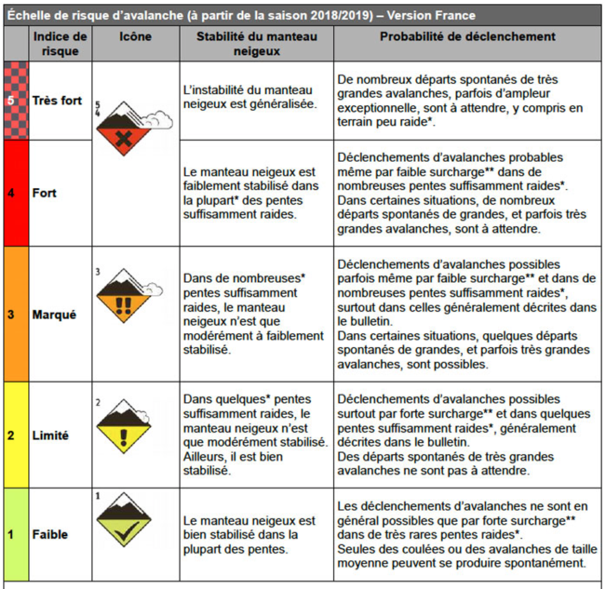
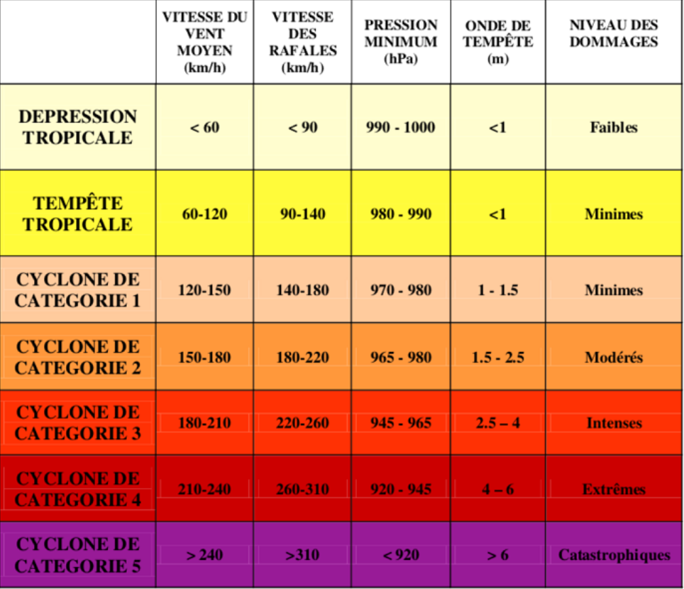
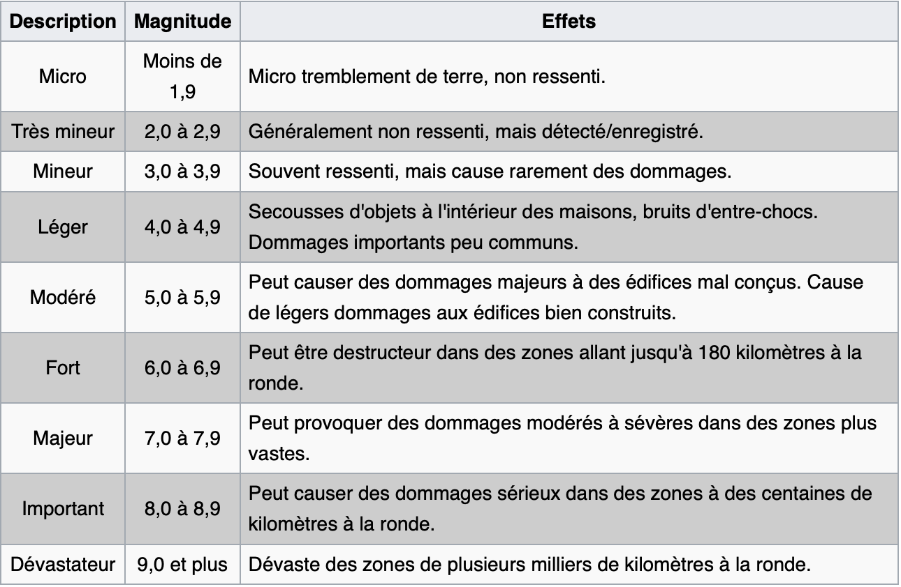
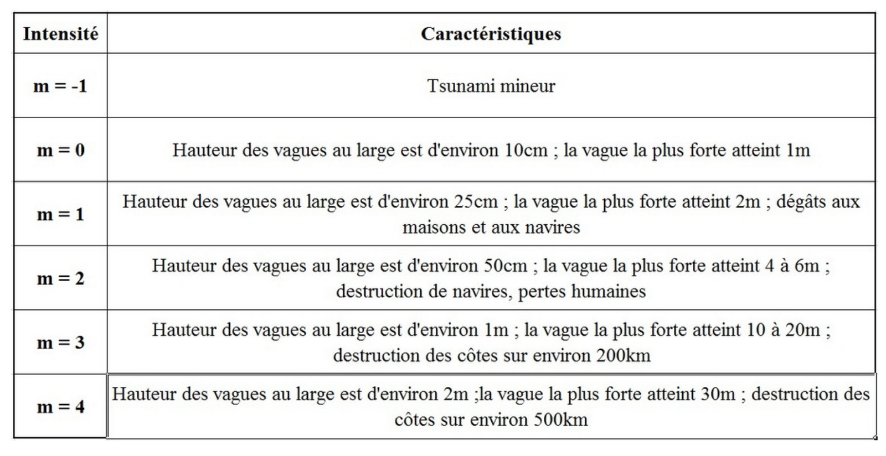

L'impact du réchauffement climatique sur l'augmentation des risques naturels à l'échelle de la Terre
C'est la réalité, les catastrophes naturelles augmentent d'années en années dans le monde. Mais le réchauffement climatique les aggrave et nous en subissons les effets néfastes.
Ces phénomènes naturels s'auto-entretiennent et s'alimentent mutuellement. Plus nous dégradons notre planète, plus elle devient fragile. Moins la planète fait preuve de résilience et plus facilement se déclenchent des événements aux conséquences souvent dramatiques.
De plus, cette augmentation surtout visible au début du XXIème siècle va induire un changement de paradigme : "Il ne s'agit plus de lutter contre le risque mais de vivre avec".
Les catastrophes naturelles se multiplient...
Retour sur les différents types de risques naturels :
AVALANCHE
= déplacement rapide d'une masse de neige sur une pente, provoqué par une rupture d'équilibre du manteau neigeux. (gouvernement.fr)

Source : anena.org
EPISODES CLIMATIQUES
Canicule = niveau de très fortes chaleurs le jour et la nuit pendant au moins trois jours consécutifs.
Grand Froid = caractérisé par sa persistance (au moins deux jours), son intensité (valeur inférieure aux normales saisonnières) et son étendue géographique.
Sécheresse : causée par le manque de pluie, une utilisation trop intensive ou inadaptée de l'eau disponible. (gouvernement.fr)
CYCLONE / TEMPÊTE
= pluies diluviennes et des vents très violents, qui peuvent atteindre 350km/h = perturbation atmosphèrique qui génère des vents (<89km/h) s'accompagnant de fortes précipitations et d'orages. (gouvernement.fr)

Echelle de Safir-Simpson, encyclopédie.environnement.org
ERUPTION VOLCANIQUE
= un volcan est un relief terrestre ou sous-marin formé par l'éjection et l'empilement de matériaux issus de la montée d'un magma sous forme de lave et de tephras tels que les cendres. (gouvernement.fr)
= on parle d'incendie de forêt lorsque le feu concerne une surface minimale de 0,5 hectare d'un seul tenant et qu'une partie au moins des étages arbustifs et/ou arborés est détruite. (gouvernement.fr)
Les causes d'un incendie : - origine naturelle : foudre, éruption volcanique, sécheresse... - origine humaine : intentionelle ou accidentelle (barbecue, mégot de cigarette...) / ou par des infrastructures (lignes de transport d'énergie, dépôt d'ordures...). (gouvernement.fr)
INONDATION
= submersion temporaire, par l'eau, de terres qui ne sont pas submergées en temps normal, quelle qu'en soit l'origine. (gouvernement.fr)
Différents types d'inondation : - par ruissellement : les eaux de pluie ne peuvent pas ou plus s'infiltrer dans le sol - par débordement de cours d'eau : le cours d'eau déborde de son lit habituel - par submersion marine : inondations rapides et de courtes durées de la zone côtière par la mer lors de conditions météorologiques et océaniques défavorables - par remontée de nappe : provoquée par le niveau de montée du niveau de la nappe phréatique jusqu'à la surface du sol. (géorisques)
MOUVEMENT DE TERRAIN
= déplacement, plus ou moins brutal, du sol ou du sous-sol. (gouvernement.fr)
Selon la vitesse de déplacement, on peut distinguer : - les mouvements lents : déformation progressive des terrains, par toujours perceptible par l'Homme (affaissements, tassements, glissement, retrait-gonflement) - les mouvements rapides : déformation brutale et soudaine (effondrements, chutes de pierres et de blocs, éboulements, coulées boueuses, laves torentielles).
SÉISME
= fracturation le long d'une faille généralement préexistante. Cette rupture s'accompagne d'une libération soudaine d'une grande quantité d'énergie et se traduit en surface par des vibrations plus ou moins importantes du sol. (gouvernement.fr)

Echelle de Richter,Vikipédia
TSUNAMI
= se manifeste par une série de vagues pouvant atteindre plusieurs dizaines de mètres de haut. (gouvernement.fr)

Echelle d'Imamura et de Lida, tpe.tsunami.weebly.com
Le cas des inondations
Les inondations sont un des principaux risques naturels présents dans le monde. Ce sont les catastrophes naturelles qui causent le plus de dégâts.
Selon les rapports du GIEC, les pluies vont augmenter en moyenne de 1 à 2% tous les dix ans, ce qui va accroître le risque inondation de plus de 86%. De plus, les scientifiques estiment que les précipitations vont être plus denses, plus récurrentes et plus extrêmes. Il va tomber un volume plus élevé de pluie dans un laps de temps plus court ce qui va provoquer un risque accru d'inondation dans le monde. La prévention de ce risque doit être mieux prise en compte, y compris dans les pays développés.
Plusieurs pays (Etats-Unis, Chine, Brésil, Australie...) ont subit diverses inondations dans les années 2000 jusque dans les années 2019. Ceci démontre que tous les pays sont concernés et non pas seulement les pays en voie de développement.
"De 2050 à la fin du siècle, 400 000 Européens pourraient quitter leur logement."(source : cepri.net)
Même si les inondations tendent à se multiplier avec le réchauffement climatique, certains pays considèrent la pluie comme indispensable pour le développement de celui-ci. Dans les pays du sud-est Asiatique, les pluies de la mousson sont essentielles pour l'agriculture malgré qu'elles soient intenses (trombes d'eau) et qu'elles surviennent dans un laps de temps très court. Des villes comme Mumbai, Dakar... ont connu une forte croissance démographique et ont délaissé la planification et la prise en compte du réchauffement climatique de côté. Partout dans le monde, de nombreuses villes sont construites sur les littoraux et sont donc plus vulnérables. La montée des eaux et le risque inondation va pousser les populations, sur le long terme, à délaisser les villes du littoral ou à renforcer les aménagements (digues, barragues) contre ces aléas. En clair, la construction dans des plaines, dans des zones inondables ou dans des marais rend le sol imperméable et favorise le risque d'inondation.
Le cas des incendies
Face au réchauffement climatique, la menace des feux de forêts est de plus en plus forte... A cause de l'augmentation des températures (évaporation plus dense et rapide), les sècheresses vont être plus intenses et plus longues. De ce fait, le mélange de la chaleur et de la sècheresse vont rendre les incendies plus fréquents.
Le changement climatique est en fait caractérisé comme l'accélèrateur des feux de forêts. Mais ces incendies, à l'inverse, vont aussi contribuer au réchauffement de la planète : lorsque les feux brûlent les arbres, ils vont libérer le C02 qu'ils avaient stockés. De ce fait, les forêts sont perçues comme "émettrices", un phénomène alarmant pour l'avenir de notre planète.
"Les feux de forêts vont augmenter de 40% en Méditerranée si on atteint un réchauffement de plus de 1,5°C."
Certains scientifiques caractèrisent les futurs de feux de forêts comme des "méga-feux" : ce sont des incendies hors normes, d'abord par leurs gigantesques tailles, ensuite par leurs durées (des jours voire des semaines) et enfin par leurs comportements extrêmes (intensité, vitesse de propagation, fronts multiples, mise en péril des biens et des personnes...).
Mais le problème des incendies à répétition va provoquer une vaste déforestation : selon l'ONG Global Forest Watch, le poumon vert de la planète "la forêt bréslienne" a perdu plus de 3,7 hectares en 2016.
La déforestation
La déforestation possède un double effet négatif vis à vis du changement climatique. Tout d'abord, les forêts sont un vrai puit de carbone : elles contiennent 20 à 50 fois plus de CO2 que tous les autres écosystèmes. La forêt est aussi un vrai raffraîchisseur d'air : sous l'effet du soleil, l'eau absorbée par les arbres s'évapore et va créer de la vapeur d'eau. Des nuages vont se former et emmener des précipitations. Mais la déforestation vient interrompre ce phénomène et ne va plus permettre le rafraîchissement de l'air. De ce fait, lors de la destruction d'arbres, le carbone libéré par le sol va se transformer en gaz à effet de serre. En bref, la déforestation est un très gros facteur du réchauffement climatique : 20% des émissions de gaz à effet de serre dues aux activités humaines proviennent de la dégradation des forêts.
Mais les forêts sont aussi menacées par le réchauffement climatique. Les arbres ont du mal à s'adapter à tous les changements induits par le réchauffement climatique : ils sont fragilisés par les tempêtes et par les périodes de sécheresse, ce qui les rend plus sensibles aux feux de forêts. Selon le GIEC, "près de la moitié de la forêt humide d'Amazonie pourrait se transformer en paysage désertique d'ici 25 ans" : des problèmatiques alarmantes pour l'avenir de notre planète.
Pourtant, nous savons tous très bien que les forêts sont les poumons verts de notre planète et les réservoirs pour préserver notre biodiversité. Le fait de détruire notre cadre de vie va à terme enrayer nos écosystèmes. Or, ce sont eux qui nous fournissent les ressources renouvelables dont nous avons plus que jamais besoin.